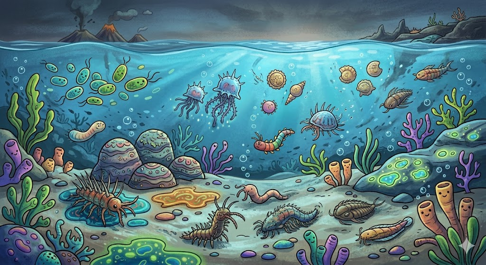
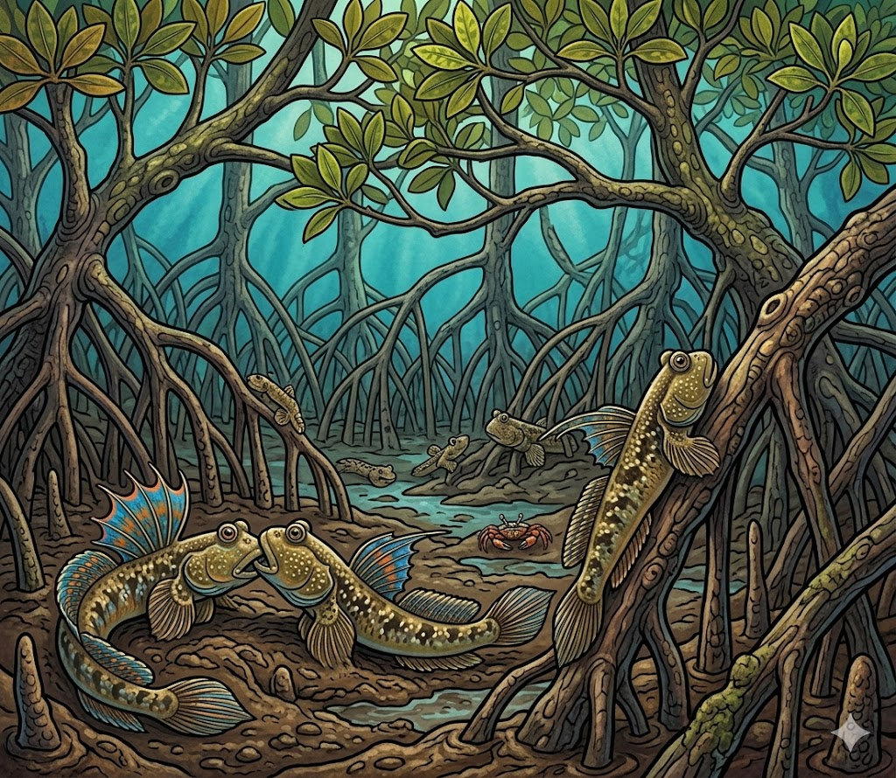
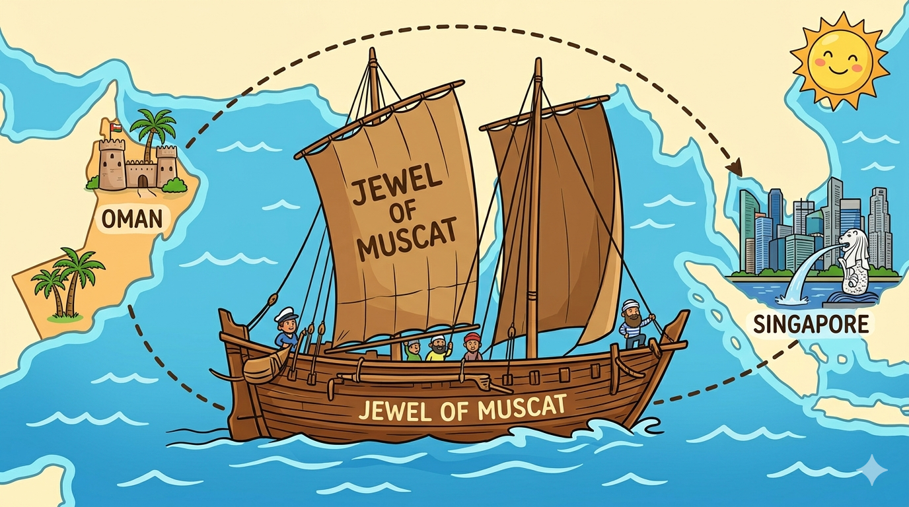
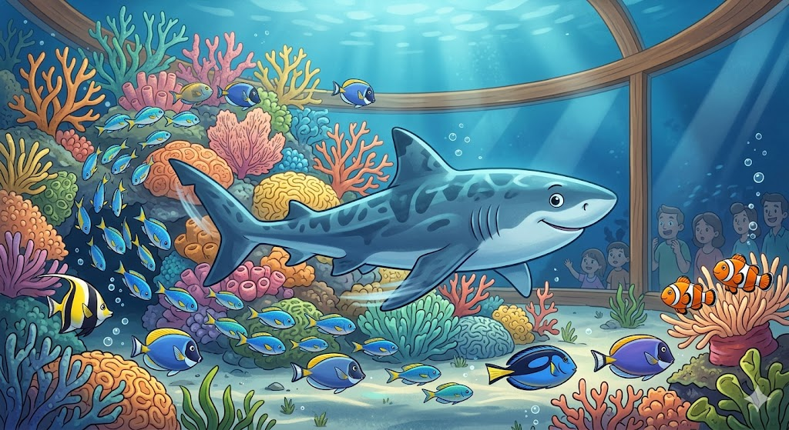
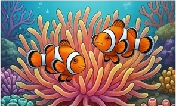

Discover the wonders of our ocean through six exciting sections! Get ready to meet glowing fish, ancient sea monsters, mighty sharks and tiny mangrove explorers. 🐠
Life started in water! Step into a time machine — meet plankton, sea jellies, and ancient sea creatures from millions of years ago.

Tiny Worlds, Ancient Wonders 🌊
A single drop of seawater can be packed with plankton — the tiny living things that feed almost everything in the ocean!
Sea jellies have been drifting around for over 500 million years — that's older than the dinosaurs! 🦖
🔭 Look out for…
Drop of Water — see plankton blown up huge so you can spot the hidden world inside one tiny drop.
Ocean Wonders — Moon Jellies and Fried Egg Sea Jellies floating like spaceships.
Ancient Waters — giant Dunkleosteus and Xiphactinus replicas, fossils and animatronics!
Conquering Land — Axolotls and frogs that show how some animals moved from sea to shore.
⭐ Fun facts
Most ocean food chains begin with plankton.
Sea jellies have NO bones — they're more than 95% water!
Some ancient fish wore armor like a knight.
Amphibians help us understand how animals first walked on land.
🧠 Mini quiz (tap to reveal)
What tiny living things can be found in seawater?
→ Plankton!
Are sea jellies older than dinosaurs?
→ Yes — by hundreds of millions of years!
Which section shows ancient sea creatures?
→ Ancient Waters

2
Section Two
At the Surface
Where land meets sea! Singapore's coast is full of mudskippers walking on mud, archerfish shooting water, and mangroves that act like a nursery for baby sea animals.

Singapore's Coast 🌳
The edge of the sea is busy with life! Mangroves are like baby nurseries — small fish and crabs grow up safely between their tangled roots.
Step aboard the Jewel of Muscat, a cool replica of an ancient sailing ship. Imagine crossing oceans long before GPS! 🧭
🔭 Look out for…
Spirit of Exploration — the Jewel of Muscat ship from long-ago sea voyages.
Singapore's Coast — our local mangrove home, with muddy roots and salty water.
Local heroes — Archerfish, Barred Mudskippers, Knobbly Sea Stars and Spotted Seahorses.
Projection magic — coastal animals that come alive on the walls!
⭐ Fun facts
Mangroves are nurseries for young marine animals.
Mudskippers can walk on mud using their fins!
Archerfish shoot water like tiny water-pistols to knock bugs off leaves.
Singapore is busy and full of buildings, but our coasts still hide cool creatures.
🧠 Mini quiz (tap to reveal)
What kind of coastal forest grows where land and sea meet?
→ Mangroves!
Which fish can shoot water to catch prey?
→ The Archerfish
Why are mangroves important for young animals?
→ They give shelter and a safe place to grow.

3
Section Three
Sunlight
The bright, busy ocean! Sharks glide through tunnels, manta rays soar like underwater birds, and corals build whole cities for thousands of fish. 🦈

A City of the Sea 🪸
Coral reefs are sometimes called cities of the sea — busy underwater neighbourhoods full of fish, clams and even sharks!
Watch manta rays "fly" through the Open Ocean tank. They look like underwater birds with giant wings.